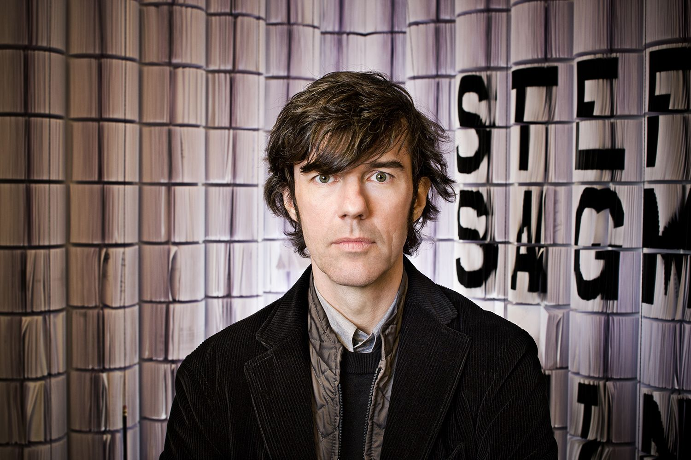
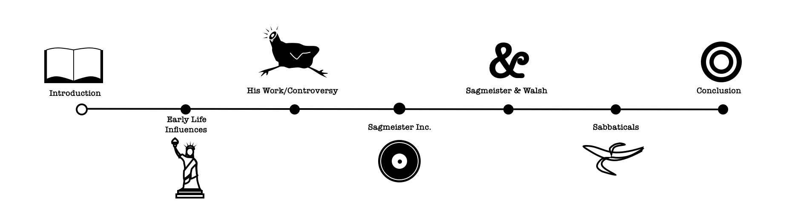
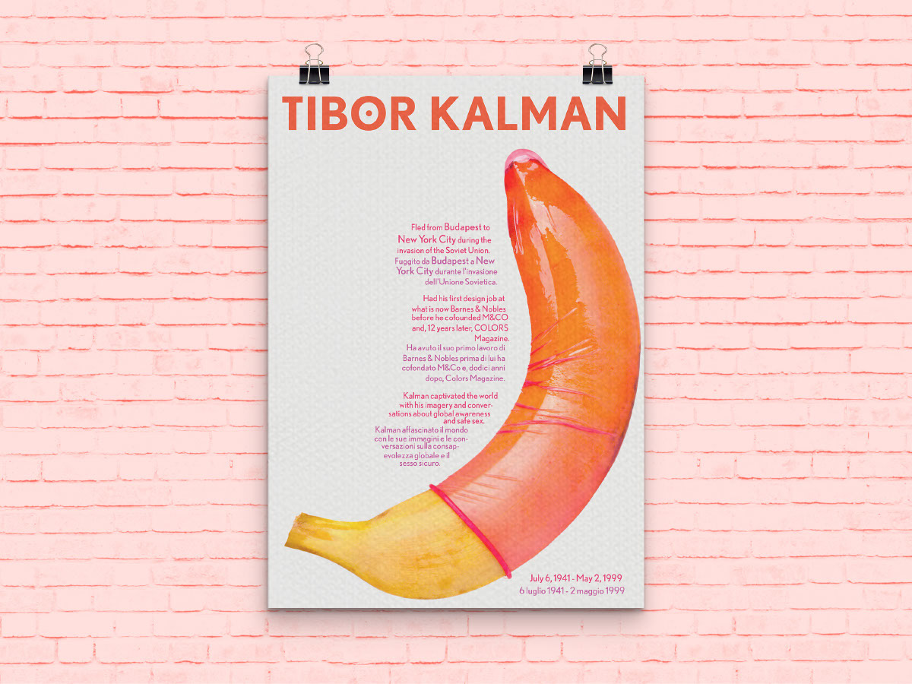
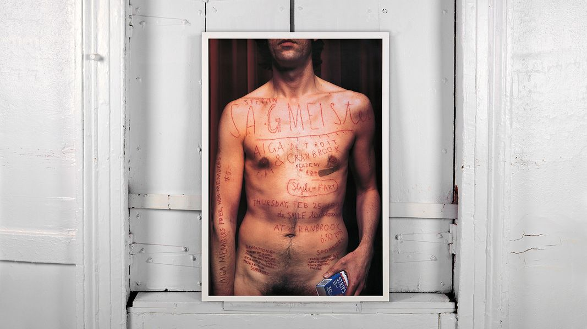
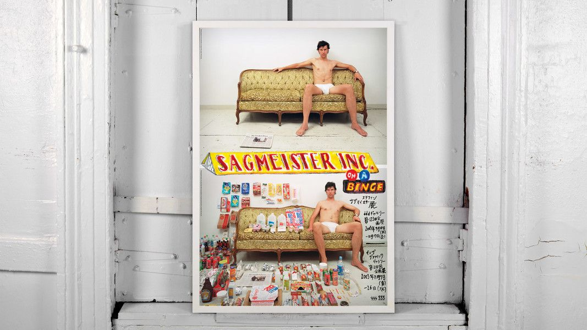
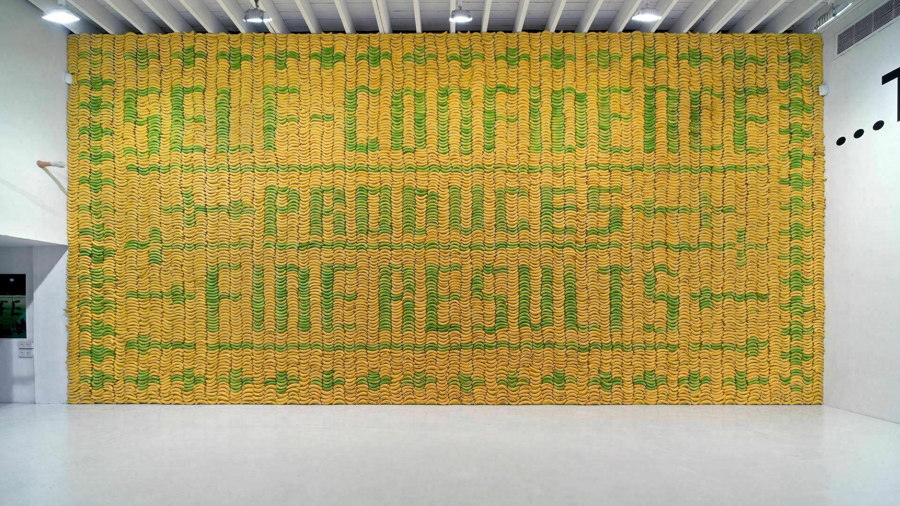
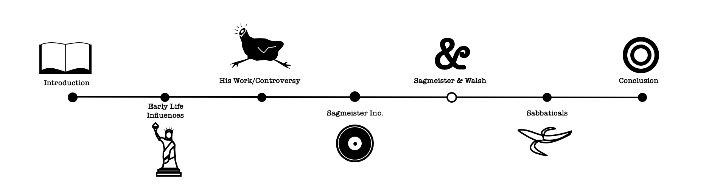

Stefan Sagmeister
What has Stefan Sagmeister taught me about design?
Introduction
Stefan Sagmeister is a graphic designer, storyteller and typographer that stretches the boundaries of creativity, crafting work that is unorthodox, provocative and unmistakably his. His distinctive work has made him stand out from the crowd, but what is it that makes Sagmeister the driving force of an industry. Often controversial and known for innovative designs this essay will explore the key points as to why Sagmesiter’s work is inspiring and highly regarded by many aspiring designers. It will look at the key defining pieces of work in Sagmeister career and what impact they have had on the design world.
Early Life and Influences
Born in Austria in 1962, it is rumored that his design career began as early as 15 when he began writing for Alphorn an Austrian youth magazine. He wasn’t working there for long before realizing he preferred to work on the layouts rather than writing the articles. Sagmeister studied at the University of Applied Arts Vienna and later received a scholarship to study at the Pratt Institute in New York. In 1991, he moved to Hong Kong to work with Leo Burnett's Hong Kong Design Group.

Sagmeister being one of the most original and innovative artists of the time it is interesting to learn who influenced him as a design student. Labelled design ‘bad boy’ Tibor Kalman of M&Co is cited at the single most influential person in Sagmesiter’s life and is his one and only design Hero. Sagmeister has shown his persistency and commitment from an early age as he called Kalman every week for a year and half until he agreed to meet with him eventually offering him a job at M&Co.
“Mr. Kalman described himself as more a social activist than a designer and constantly sought to use his work to promote causes like environmentalism and economic equality.” (New York Times, 1999).
It is easy to see why Sagmeister looked up to Tibor Kalman as the two were very alike and trail blazers in their industry. They both used their influence as designers to promote causes they believed in.
His Work/Controversy
He is known to many for his early work in the music industry and holds two Grammys for his album cover designs. His famous clients include The Rolling Stones, Jay Z, Aerosmith and Pat Metheny. His notable clients however do not do justice for the legacy of his work or convey the controversy he has stirred up as a result. “Sagmeister's CD package designs are what poetry is to prose: distilled, intense, cunning, evocative and utterly complete. His intentions have set a new standard.” (I.D. Magazine, 2000)
Sagmeister Inc

Sagmeister makes it very clear that he believes in working with different mediums and against what is the norm of design. Sagmeister often demonstrates through his work pain and self-sacrifice as a designer. He created a lecture poster, AIGA Detroit 1999, in which he carved the words into his skin as he said that doing this by computer would not have had the same affect. This is only true though as two decades later the work is still as controversial and unsettling. In 2003 he created the "Sagmeister on a Binge" exhibition poster, for which he ate 100 different junk foods, gaining almost two stone in the process in only a week, and took before and after pictures of his semi-nude body. Many say that Sagmeister’s work is for media attention and promotes the wrong message for designers. However, I would disagree and defend his choices in his darker and unsettling work as it carries a strong message in a superficial driven society at what changes their opinion. Sagmeister is a talented designer that offers a lot to the industry and drives it forward, his work does not exist for the sake of being controversial.
Many people look at Sagmesiter’s work in a negative light as he takes a diverse approach to his designs that some may see as ill-favored. As a designer is it important to be conscious of the struggles in the world and be aware of those less fortunate when designing. Sagmeister has received a lot of backlash in the past for his piece “Banana Wall” (2008). Described as distasteful, a wall adorned with over 10,000 bananas at varying stages of ripeness that, for a limited time displayed the phrase “Self-confidence produces fine results” before rotting away completely, it was heavily criticized for its wastefulness. It is important for young designers to see the nerves can be struck in design and know that social responsibility is a part of design too.

Sagmeister&Walsh
After many years in industry and not being someone to stick to what he knows Sagmeister began to diversify, and he started his own creative company Sagmesiter Inc, later changing to Sagmeister&Walsh with his business partner Jessica Walsh. Sagmeister has shown throughout his career interest in a wide variety of topics, he never continues doing the same thing and this is what pushes him to create his original and innovative work. This is an important lesson to learn from Sagmeister, trying something different and exploring different themes and interests is what enables artists to create authentic work. Pushing creative boundaries enables artists to create the most interesting and individual outcomes. ‘You should do everything twice. The first time you don’t know what you’re doing. The second time you do. The third time it’s boring,’” (Stefan Sagmeister)
Sabbatical
Conclusion
To conclude there are many lessons that we can learn from Sagmeister. Sagmeister’s work acts as a reminder to designers to work towards creating unique pieces when possible to push the boundaries as a designer resulting in powerful and original outcomes.